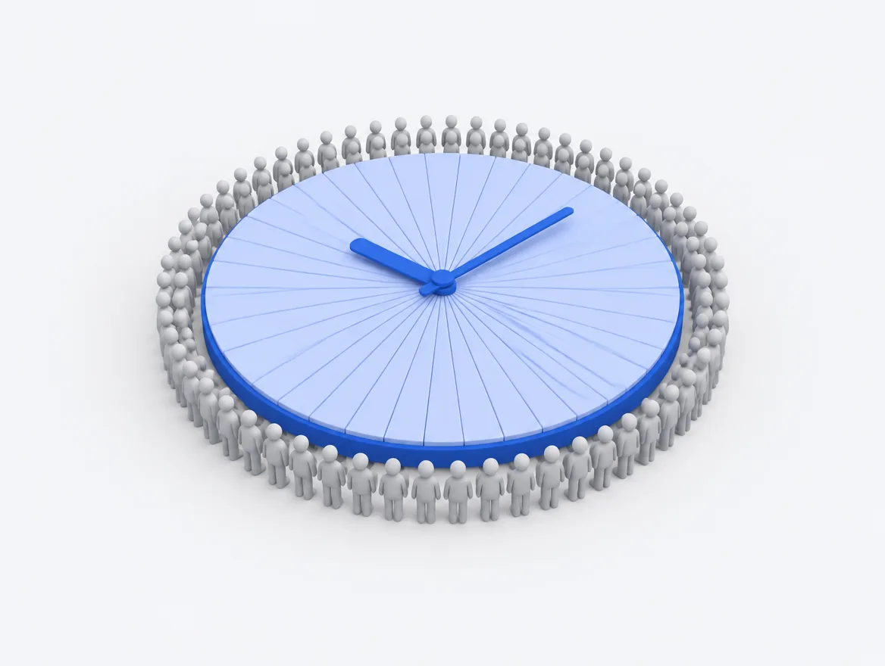
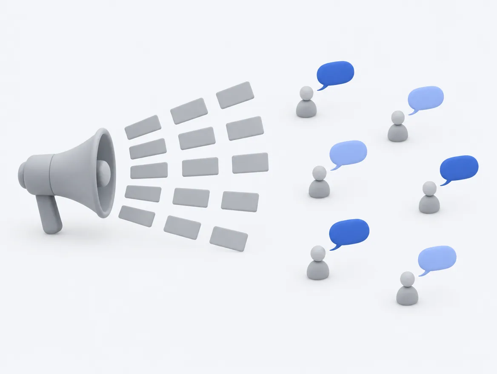

ai-bo › 構造上の問題
事務所で起きていることTikTok LIVEエージェンシー事業には
構造上の問題があります。
これは、特定の事務所の話ではありません。所属するクリエイターが増えるほど、仕組みとして必ず起きることです。担当者の努力や能力の問題ではないので、「もっと頑張る」では解けません。ここでは、その構造を5つに分けて整理します。
目が届かない人は、
成長すればするほど増えます。
所属が増えることは、サービスが伸びている証拠です。しかし同じだけ、一人あたりに割ける時間は減ります。この2つは切り離せません。
人数が増えるほど、一人あたりに割ける時間は減る
担当者1人が見られる人数には限りがあります。毎日、全員の配信状況を確認し、変化に気づき、一人ひとりに合った言葉で声をかける——これを数十人ぶん続けることは、時間の制約として成り立ちません。
所属が増えるほどサービスは伸びますが、同時に一人あたりに割ける時間は確実に減ります。成長そのものが、目の届かない人を生みます。

見られるのは「上」と「下」だけで、真ん中が落ちる
担当者は、まず成果の出ている人を見ます。次に、明らかに問題が起きている人を見ます。限られた時間を配分すれば、自然とそうなります。
いちばん後回しになるのは、その間にいる人たちです。静かに止まりかけている人は、目立たないので気づかれません。そして、早く手を打てれば戻ってきてもらいやすいのも、この人たちです。
気づいた時点で、すでに遅れている
「最近見ないな」と思ったときには、たいてい数週間が経っています。日々の業務の合間に気づくには、それだけの時間がかかるからです。
配信が止まってからの日数が延びるほど、戻ってきてもらえる確率は下がります。同じ一声でも、早いか遅いかで結果が変わります。問題は声のかけ方ではなく、気づくまでの時間のほうにあります。
辞める人は「辞めます」と言わない
退会の連絡が来ることは、ほとんどありません。配信が止まり、連絡が減り、そのまま戻らない。それだけです。
区切りがないので、いつ離れたのかが分かりません。気づくのは、月末に数字を見たときになります。その時点では、手を打てる時期がすでに過ぎています。
一斉配信は、自分宛てだと思ってもらえない
全員に同じ文面を送っても、自分に向けられた言葉としては読まれません。かといって、一人ずつ書き分ける時間はありません。
「読まれる言葉」と「続けられる手間」が両立しないこと自体が、構造の問題です。どちらかを選べば、もう片方が必ず犠牲になります。
これは、やる気の問題ではありません。
5つとも、担当者の努力や能力とは関係なく起きます。人数と時間の制約から出てくるものだからです。だから、研修や声かけの徹底では解けません。解こうとすると、たいてい担当者のほうが先に消耗します。

やり方は、2つしかありません。
構造の問題なので、構造を変えるしかありません。選べる道は2つです。
人を増やして解決
担当者を増やせば、見られる人数は増えます。確実な方法です。
ただし、コストが人数に比例して増えます。所属が増えるほど採用と教育が必要になり、一人あたりにかかるコストは下がりません。目を増やすために、見るべき人数も一緒に増えていきます。
仕組みで解決
毎日、全員のデータを見て、変化に気づき、その人に合った言葉で声をかける——人がやると続かない部分だけを、仕組みに任せます。人は「人が出るべき場面」に集中できます。
- 所属が何人に増えても、運営の手間は変わりません
- 見落としが「忙しさ」で起きなくなります
- 人は、人にしかできない対応に時間を使えます
ai-bo 自身が、ai-bo について答えます。
LINEで友だち追加していただくと、ai-boとそのまま会話できます。実際の受け答えを見ていただくのが、いちばん早いと思います。
ボタンが反応しないときは info@ai-bo-lab.jp へ直接お送りください。